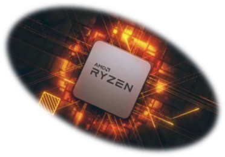
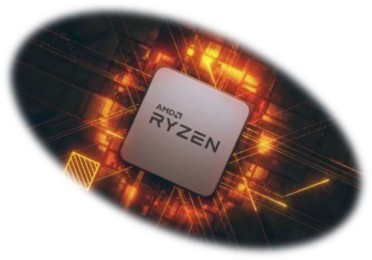

¿Quiénes somos?
Somos una microempresa, que ofrece servicios de computación, sistemas y aparatos electrónicos.
Miembros de la empresa:
Hugo Brito-Técnico en informática y licenciado en ciencias de la informática.
Jorge Nájera-Ingeniero en sistemas digitales.
Betuel Nájera-Técnico en Sistemas Digitales.
¿Hacemos y buscamos?
Buscamos ser reconocidos como una empresa con servicios de calidad, excelencia e integralidad. Queremos ser percibidos como un aliado estratégico, generando valor y satisfacción tanto para nuestros clientes como para nuestros y socios.
- Costo: Buscamos en todo lugar los mejores productos y de calidad al mejor costo para ajustarnos, no solo a sus necesidades sino también a su presupuesto.
- Eficiencia: Sin descuidar la calidad y/o eficiencia de algún producto, además de apegarnos a un calendario y fechas de trabajo y entrega que se acordaron.
- Compromiso: Compartimos conocimientos, experiencias y esfuerzo para ofrecer el mejor servicio.
- Valoramos todas las opiniones e ideas y trabajamos bajo un método que promueve el enriquecimiento.
- Vocación: Ayudamos a pensar y tomar decisiones cuando nuestros clientes enfrentan desafíos tecnológicos.
- Nuestra motivación es conocer y satisfacer sus necesidades de manera rápida y eficaz.
- Honestidad: Mantenemos transparencia, honradez e integridad en nuestras relaciones diarias. Rechazamos prácticas de negocio injustas y somos ejemplo para los demás.


 
